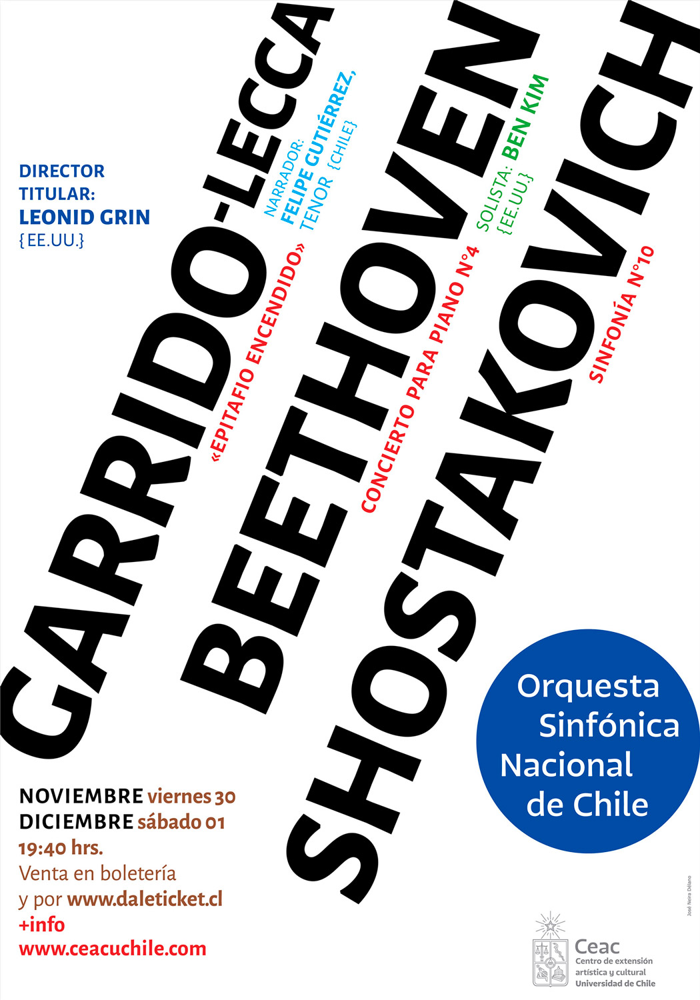
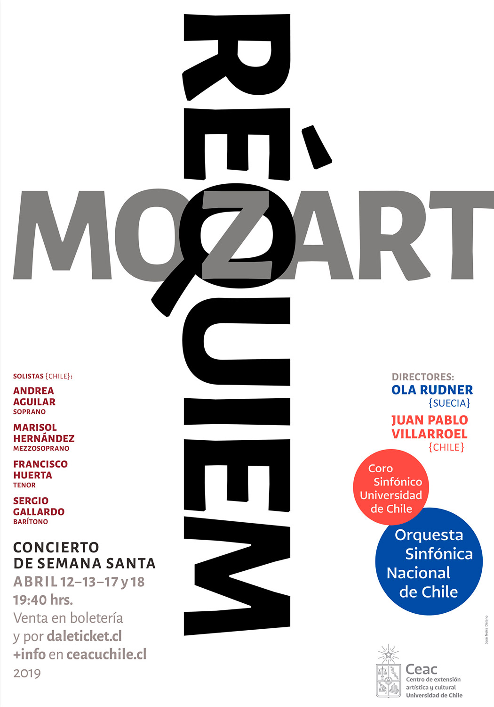
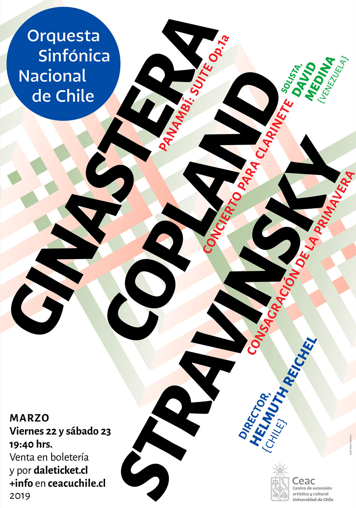
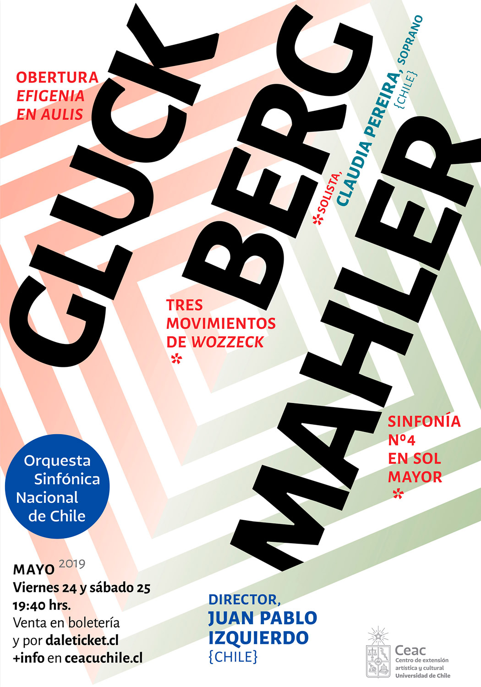
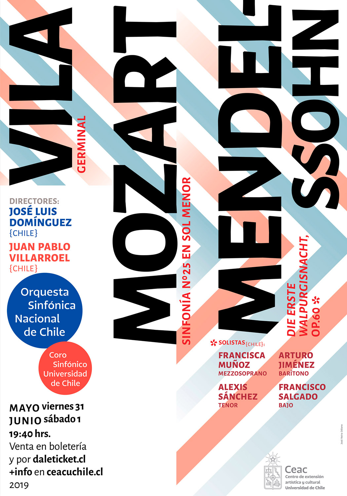
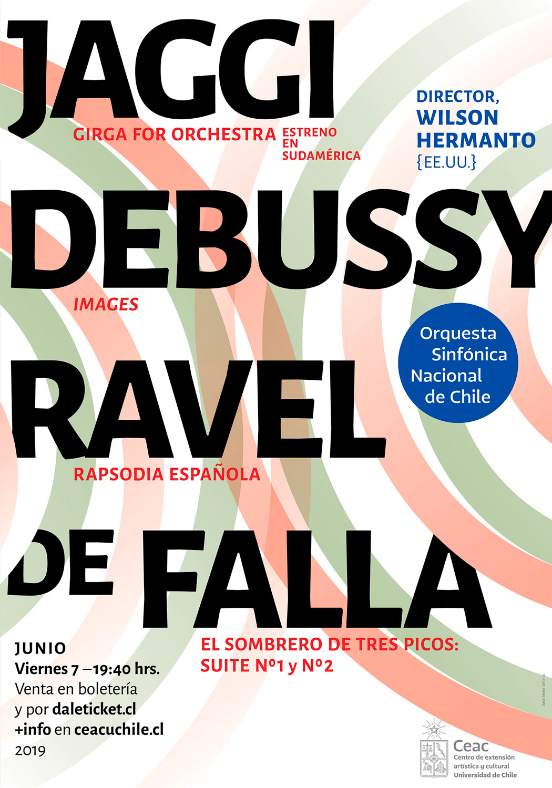

Concert posters 2018-19, Artistic and Cultural Extension Center, University of Chile
There are four glass cases at the entrance of the theater of University of Chile which hold the 77 x 110 cm posters. Most of the posters are solved by a simple typographic composition that tries to fit the composer’s names as big as possible in order to catch the eyes of the public.
Except for the poster for Mozart’s Requiem, to come up with conceptual solutions for this content is not easy. Take the one bellow, for instance, music by contemporary Chilean Composer Garrido-Lecca, Beethoven and Shostakovich. However, the beauty of black type can evoke and ‘resonate’ with the music. We use Alegreya sans and serif, an extraordinary font designed by Argentinean type designer Juan Pablo del Peral.






